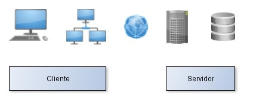

Trabajo Fin de Carrera
Gestor de exámenes tipo test vía web
bajo un entorno LAMP
Director: D. Hilario Gómez Moreno
Alumno: Miguel Ángel Paniagua García-Baquero
Escuela Politécnica de Alcalá de Henares, XX de mayo de 2014
Agenda
- Introducción
- Base Teorica
- Implantación Practica
- Conclusiones
Miguel Ángel Paniagua García-Baquero
Introducción
Introducción
- Crecimiento del acceso a Internet
Las tarifas para el acceso a Internet son más asequibles.
El número de dispositivos con acceso es mayor. Ordenador, televisor, consolas, telefonos... - Evolución de los navegadores
Los navegadores han evolucionado de ser aplicaciones desde donde consultar información con imágenes a ser el escenario desde donde podemos acceder a todo tipo de contenido. Siendo capaces de reproducir distintos formatos de representación.
- Interacción Usuario-Web
Inicialmente solo se compartian datos. Desde la llegada de la web 2.0 no solo se consume datos estaticos. Ahora, podemos consultar datos en función a los datos que nosotros introducimos.
Miguel Ángel Paniagua García-Baquero
Introducción
- Formación en línea
Expasioón de los MOOC.
Mayor número de alumnos, cada uno va a un ritmo diferente. Para comprobar el seguimiento de la asignatura se realizan preguntas durante los videos y . - Formación presencial
El temario de la asignatura se imparte a grupos en sesiones únicas. Siguiendo un orden. De manera en lo Los navegadores han evolucionado de ser aplicaciones desde donde consultar información con imágenes a ser el escenario desde donde podemos acceder a todo tipo de contenido. Siendo capaces de reproducir distintos formatos de representación.
- Evaluación
Único examen vs conjunto de pruebas. Los exámenes tipo test permiten al profesor hacer un seguimiento de la asimilación por parte de los alumnos. Herramienta de preparación para otras pruebas.
Miguel Ángel Paniagua García-Baquero
Base Teórica
Modelo Cliente-Servidor

El lado cliente corresponde al navegador web.
El lado servidor está formado por el servidor web Apache con el modulo PHP instalado y la base de datos MySQL que forman el entorno LAMP
Entorno LAMP
Un entorno LAMP está formado por un conjunto de distintas aplicaciones que forman el escenario para poder proporcionar servicios web.
-
Linux
Sistema operativo de software libre. Distribución Ubuntu orientada al usuario medio. Gestor de paquetes que facilitan la instalación de distintas aplicaciones. -
Apache
Servidor web de código abierto. Atiende las peticiones HTTP entre el cliente y el servidor. -
MySQL
Base de datos relacional de software libre. Relaciones entre tablas. Muy rápida en operaciones de lectura. - PHP
Perl o Python. El servidor web interpreta el código y genera una página web con el resultado.
Miguel Ángel Paniagua García-Baquero
Apache+PHP+MySQL

Miguel Ángel Paniagua García-Baquero
Apache+PHP+MySQL
Estatico vs Dinamico
Las páginas web estaticas siempre devuelven el mismo resultado HTML. Las páginas web dinamicas devuelven una respuesta HTML en función de unos parámetros recibidos desde cliente o variables dentro del servidor.
El contenido dinamico es generado por el script PHP apoñandose en la base de datos para leer y almacenar la información a representar. Tras terminar la interpretación del script PHP el servidor Apache devuelve el resultado al cliente en forma de página HTML.
Miguel Ángel Paniagua García-Baquero
MySQL
Base de datos
Es una base de datos relacional. Muy rápida en la lectura, no tanto en la escritura. Continua manteniendo licencia GNU GPL.Relaciones
Una base de datos puede tener diferentes instancias, para diferentes propositos cada una, con varias tablas donde se estructura las relaciones de los datos guardados. Las relaciones pueden ser:- Uno a uno - Un examen pertenece a un alumno
- Uno a muchos - Un pregunta tiene varias respuestas
- Muchos a muchos - Varios alumnos pertenecen a varios grupos
Miguel Ángel Paniagua García-Baquero
PHP
Lenguaje de programación
Lenguaje de programación interpretado. Software libre, no GNU. Diseñado para la programación web representando su resultado en HTML. Posibilidad de trabajar con datos de distintos motores de base de datos. Proporciona lógica a la aplicación.Sintaxis
<div>
<?php
//Variables
$a = 1;
$b = 2;
echo $a + $b;
?>
<div>
Miguel Ángel Paniagua García-Baquero
PHP
Sesiones y Cookies
Son utilizadas para almacenar información.Las cookies se guardan en el cliente, durante un periodo de vida largo, independientemente del servidor que le proporcione los recursos.
Las variables de sesión se guardan en el servidor. Dependen de la conexión cliente-servidor. Pueden guargar mas información que las cookies.
La información almacenada en las cookies puede ser manipulada manualmente por el cliente haciendo más seguras las variables de sesión. Para almacenar estructuras complejas de datos primero tendremos que serializar la información a modo de cadena.
Miguel Ángel Paniagua García-Baquero
PHP
Sanitización
Limpiar de código malicioso.La aplicación tiene que filtrar toda la información que llegue del lado cliente.
filter_input($cadena), htmlspecialchars($cadena), mysql_real_escape_string($query)

Miguel Ángel Paniagua García-Baquero
MySQL + PHP
Trabajar con datos
Almacenar datos de diferentes origenes. Algunas veces necesitaremos tratar los datos antes de escribirlos e interpretarlos tras su lectura.Conexión
<?php
$recurso = mysql_connect('servidor','usario','contraseña');
?>
Miguel Ángel Paniagua García-Baquero
MySQL + PHP
Operaciones CRUD
Para operar con la base de datos utilizamos la sintaxis SQL. El comando mysql_query es fundamental para trabajar con MySQL. Las operaiones básicas serán:
<?php
//Escribir - Create
$escritura = mysql_query("INSERT INTO tabla (campo_1, campo_2)
VALUES ('valor_1','valor_2')"); // Comillas simples para los valores
//Leer - Read
$lectura = mysql_query("SELECT campo FROM tabla WHERE campo_1 = valor");
//Actualizar - Update
$actualizacion = mysql_query("UPDATE tabla SET campo_1 = 'valor'
WHERE condicion");
//Eliminar - Destroy
$borrar = mysql_query("DELETE FROM table WHERE condicion LIMIT 1");
?>
Miguel Ángel Paniagua García-Baquero
MySQL + PHP
Ejecución SQL
Almacenar datos de diferentes origenes. Algunas veces necesitaremos tratar los datos antes de escribirlos e interpretarlos tras su lectura.
<?php
$lectura = mysql_query('SELECT * WHERE nombre='María');
if (!$lectura) {
die('Consulta no válida: ' . mysql_error());
}
while($valores = mysql_fetch_assoc($lectura)){
echo $valores['nombre'];
echo $valores['apellidos'];
echo $valores['DNI'];
}
?>
Miguel Ángel Paniagua García-Baquero
HTML
Hyper Text Markup Language
Lenguaje de marcado para estructurar las páginas web. Identifican el contenido a representar, pero no el como se mostrará. Tiene una estructura en árbol conocida como DOM (Document Object Model). Cada sección es un nodo del árbol.
Estructura
<!DOCTYPE html>
<html>
<head>
Titulo
</head>
<body>
<!-- Comentario -->
Contenido
</body>
</html>
Miguel Ángel Paniagua García-Baquero
HTML
Hyper Text Markup Language
Elementos (Etiquetas)
<head>
Titulo
</head>
Miguel Ángel Paniagua García-Baquero
HTML
Hyper Text Markup Language
Atributos
<div id="identificador_unico" class="nombre de la clases">

Parrafo
</div>
Los elementos tienen varios atributos para poder identificarlos dentro del árbol DOM. El atributo id tiene que ser único dentro del documento. El atributo class especifica el tipo de clase de la etiqueta para la hoja de estilos.
Miguel Ángel Paniagua García-Baquero
HTML
Hyper Text Markup Language

No siempre hay una sola dirección.
Miguel Ángel Paniagua García-Baquero
CSS
Cascadind Style Sheets
Hojas de estilo. Indican como se van a mostrar los elementos que forman el HTML. Se pueden declarar en archivos externos, indicando la ruta en la cabecera del documento. De manera puntual podemos cambiar algún parametro con el atributo style dentro del código HTML.
Ejemplo
p.verde {color:white;text-align:center;background-color:#007700;}
Las etiquetas <p> de la clase verde dentro del documento HTML tendran color de la fuente blanco y fondo verde.
Ejemplo
Miguel Ángel Paniagua García-Baquero
CSS
Cascadind Style Sheets
Sintaxis
selector.clase {
propiedad: valor;
propiedad: valor;
}
selector identifica al elemento HTML que va a modificar. El caracter ' . ' señala que se va nombrar un tipo de clase.
Entre llaves { ... } y separados por ' ; ' se enumeran las propiedades que se modificarán y los valores que tomarán cuando el navegador muestre el HTML.
Se pueden modficar todo tipo de parametros. Fuente, color de fondo, referencia de posicion, redondear esquinas de las cajas...
Mas información en: Developer Mozilla - Introducción a CSS.
Miguel Ángel Paniagua García-Baquero
JS
JavaScript - Comportamiento
Es un lenguaje que interpreta el navegador. Nos proporciona la posibilidad de cambiar algunos aspectos de los objetos representados, aumentando el dinamismo dentro de la página web. El navegador nos proporciona seguridad frente a algunas vulnerabilidades conocidas de JS, ejecutando el código en una 'sandbox' y no compartiendo datos entre las páginas.
jQuery
Es una librería JavaScript que nos facilita la manipulación del DOM de manera no intrusiva al marchado HTML.Ademas, nos proporciona los metodos necesarios para hacer llamadas Ajax de una manera sencilla.
Miguel Ángel Paniagua García-Baquero
TITULO
Miguel Ángel Paniagua García-Baquero
Base Teorica
Miguel Ángel Paniagua García-Baquero
Practica
Miguel Ángel Paniagua García-Baquero
Conclusiones
Miguel Ángel Paniagua García-Baquero
¿Preguntas?
Miguel Ángel Paniagua García-Baquero